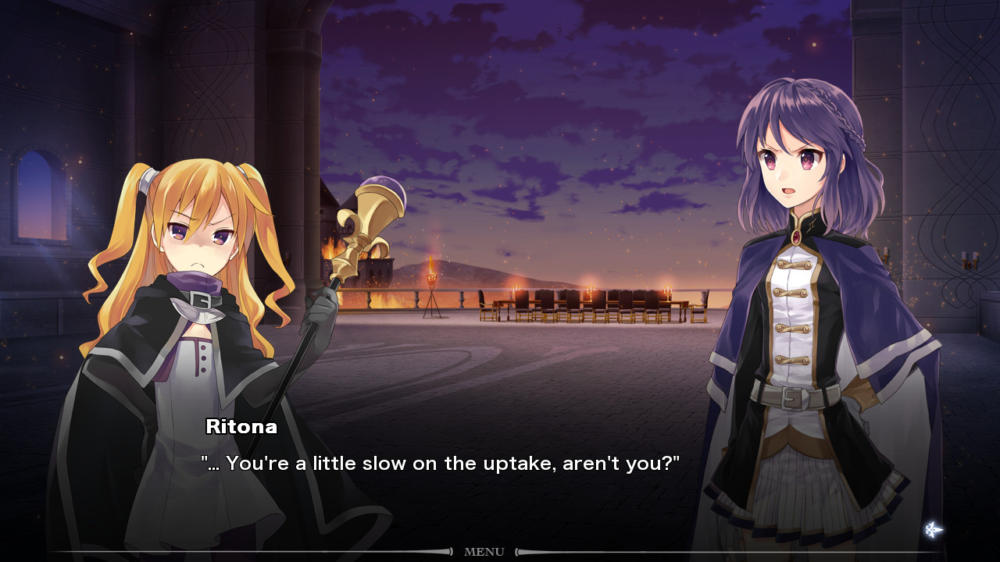
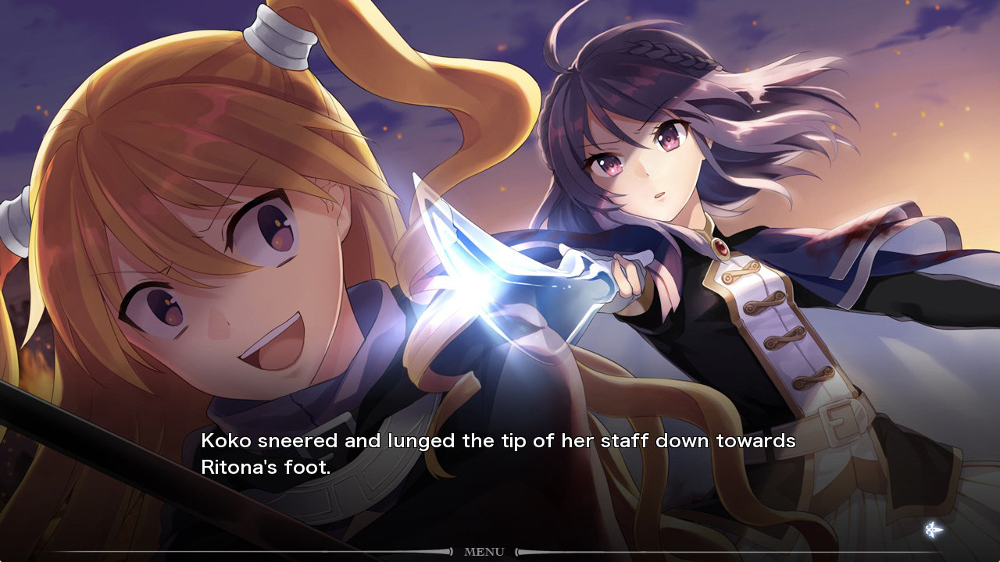
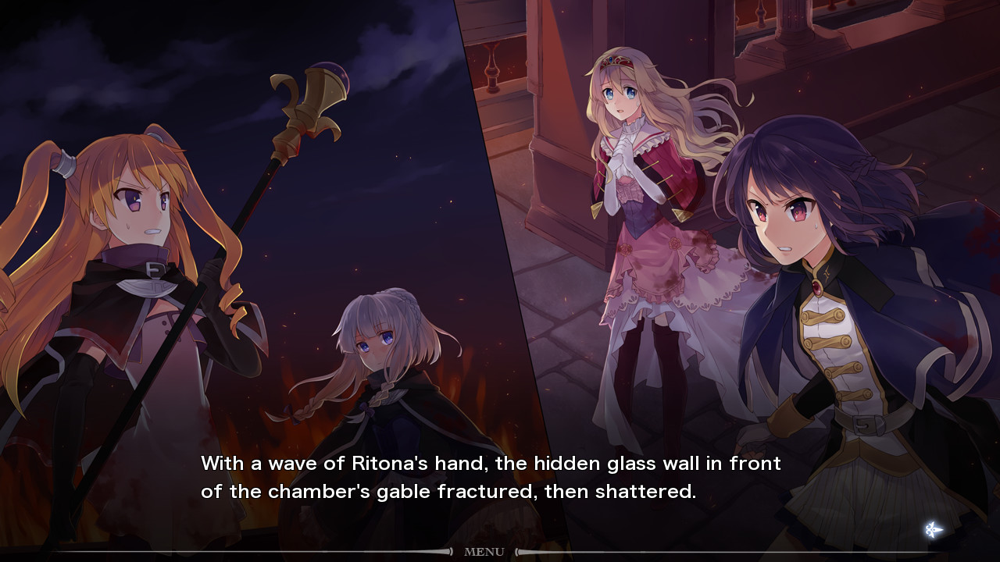
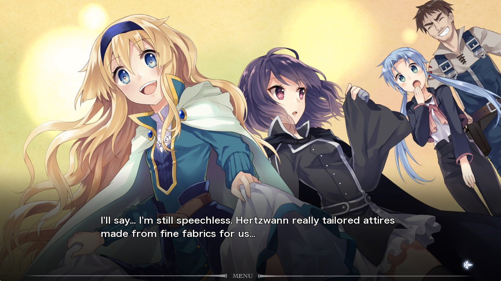
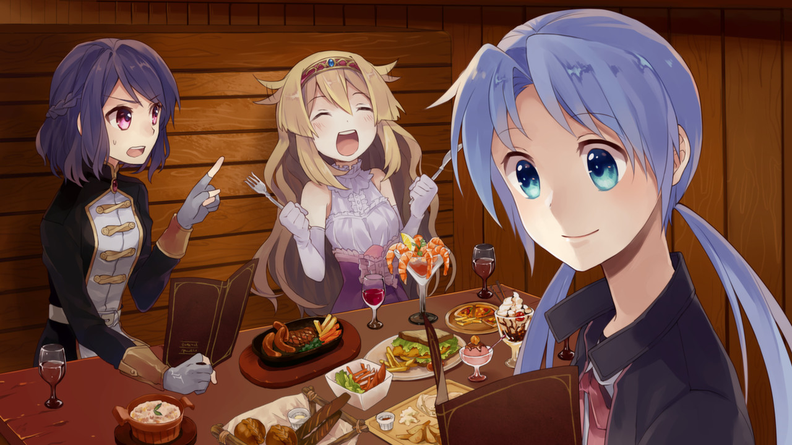
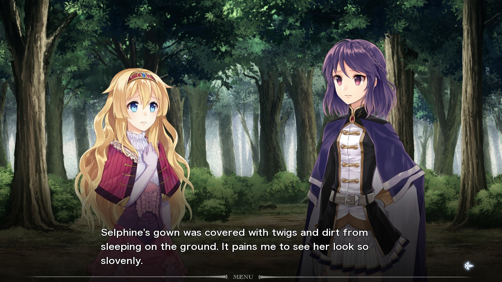
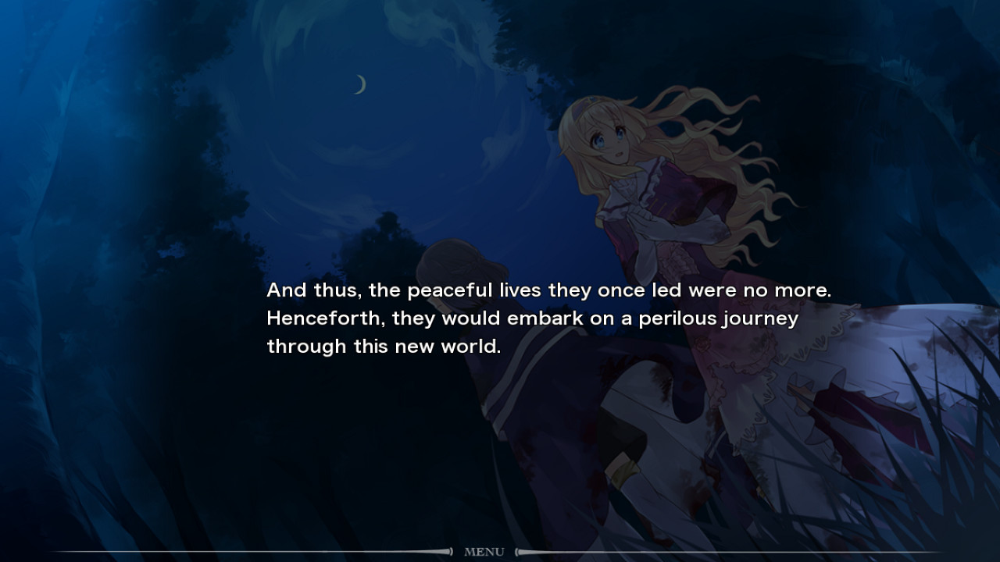

Fault Milestone One
Release Date:
August 12, 2013
Developer:
Publisher
Genres:
Sci-Fi, Fantasy, Mystery
Novel Length:
Anime Adaptation:
None
Prequel:


Reviews
"... If you are looking for quick experience to jump into akin to Dysfunction Systems hinging on a continuation and bordering more toward wild science fiction of the 80's (a la Andromeda Stories is the best example), this is a perspective title to look into, although won't be for everyone."
"Although fault milestone one clocks in at roughly 5-7 hours of gameplay, the first instalment is promising as you are left pondering the fate of the characters and the events that may transpire."
"... The music and visuals were wonderful. I definitely plan on reading the next installment, Fault - Milestone Two Side: Above."
About This Novel
END OF PEACE. BEGINNING OF A JOURNEY.
Launched as a throwback to the Science Fiction genre in the 80's, fault - milestone one is a Science Fantasy Kinetic Novel which depicts the story of a princess named Selphine and her Royal Guard Ritona. While attempting to make an escape from a brutal assault that's devastated their homeland of Rughzenhaide, the two mysteriously teleport to an unknown forest surrounded by vegetation not native to the surroundings of Rughzenhaide. The atmosphere is thick and heavy and no sign of life can be found, which is particularly unusual for such a lush forest. Sign of life isn't the only thing missing though. Something is odd about this land - something is amiss - but Selphine and Ritona are too startled to notice the obvious.
Who were the assaulters and what was their goal? Where did Selphine and Ritona end up traversing to? Will the two make it home safely? And more importantly, what will they come home to once they do?
Follow Selphine, a bubbly, happy-go-lucky Princess and her sharp-witted but slightly misanthropic Royal Guard Ritona, in their journey of a lifetime as they head back to their homeland of Rughzenhaide.
(From VNDB)
Technical Details
Platforms:
Windows, Linux, Mac
Resolution:
16:9
English:
Fully Translated
Animated Scenes:
Simple
Voiced:
None